La BB 27000 version 
Nicolas Schou et T. Stachnik ont réalisé un pack de BB 27000.
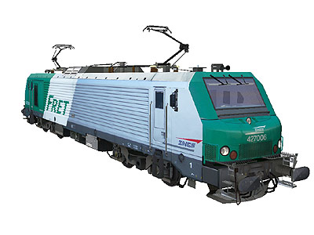 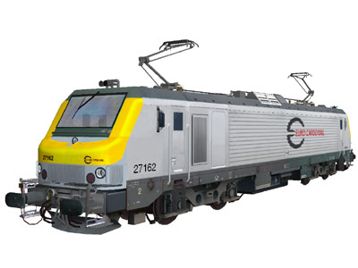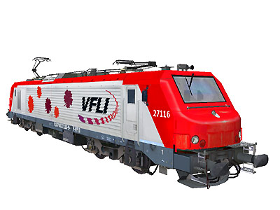
Ferrovia - 20 Mai 2012 - Mise à jour 23 Mai 2017
BB 27000
Les Prima
La "Locomotive Fret" alias Prima de chez Alstom.
Faisant table rase de près de quarante années de recherche pour obtenir une locomotive universelle (qui ont abouti aux BB 26000 et BB 36000), les BB 27000 marquent un changement de cap majeur pour la SNCF avec la séparation des activités et la spécialisation du parc moteur.
Ce sont des machines dédiées au trafic marchandises et messageries. La conception est simplifiée pour réduire au maximum l'entretien courant : moteurs asynchrones suspendus par le nez, solution réduisant la vitesse limite à 140 km/h. Les machines sont dépourvues de ligne de chauffage train. Les 27000 innovent par leur chaîne de traction constituée d'onduleurs à transistors IGBT refroidis par eau. La cabine offre un position de conduite centrale et un pupître informatisé.
180 exemplaires ont été livrés de 2001 à 2006. Certains exemplaires appartiennent à Akiem, filiale de la SNCF qui les loue à des entreprises ferroviaires privées. Ces 27000 roulent ou ont roulé aux couleurs d'ECR, VFLI, OSR, ETF ou Régiorail.
Les 27000 ont été déclinées en version tritension 37000 et en version Banlieue 27300.
Le 2 Février 2012, la BB 27115, louée par ECR, est impliquée dans le rattrapage de Maillé. Alors qu'il roule en marche à vue, le mécanicien aperçoit tardivement le dernier wagon d'un train de ballast Colas de 1959 tonnes. Bien que la vitesse du choc soit relativement basse (20 km/h), la 27115 est soulevée par l'arrière par son propre convoi tarant 1392 tonnes. La décision n'est prise qu'en Octobre 2015 de radier la locomotive qui servira de banque de pièces pour le reste de la série.
Quelques données techniques
Constructeur : Alstom
Tension d'alimentation : continu 1,5 kV et monophasé 25 kV, 50 Hz
Chaîne de traction : onduleurs à transistors IGBT - Moteur asynchrones
Motorisation : 2 moteurs suspendus par le nez par bogie
Puissance totale : 4200 kW
Aptitude à l'UM
Longueur : 19,520 m
Masse : 90t
Pantographes : 2
Particularités :
Locomotives équipées Mémor II (pour circulation au Luxembourg) : 27026-30
27000M (Locomotives équipées d'archets de pantographes larges pour circulation sous caténaire Midi) : 27001-20, 112-114, 119-137, 142-155, 171-180
Pour plus d'info :
La fiche BB 27000 sur Wikipedia
Fiche technique des BB 27000 de Florent Brisou
L'inventaire des BB 27000 sur Trains du Sud-Ouest
Rapport final du BEA-TT sur l'accident de Maillé.
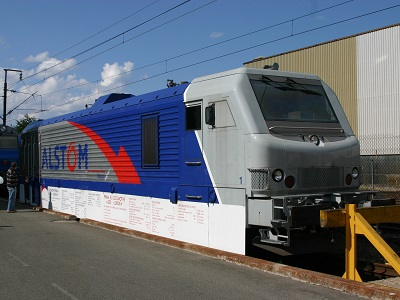
Le prototype Prima posé sur bogies de service lors
des JPO Alstom (Belfort, 16/06/2007)
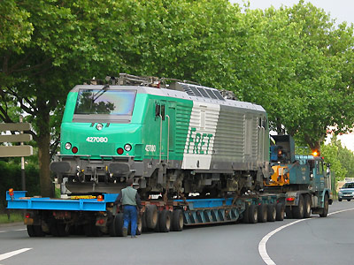
La BB 27080 en convoi pour l'exposition Train Capitale (09/05/2003)
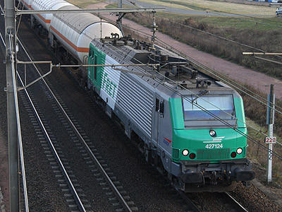
La BB 27124 porte encore le logo Desgrippes. La Ville aux Dames (24/12/2008)
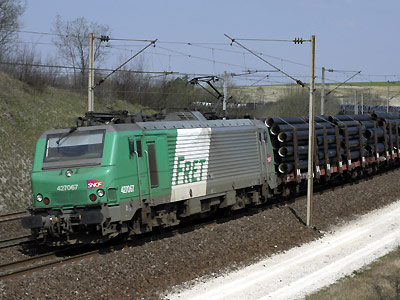
La BB 27067 dans la rampe de Lérouville (04/04/2007)
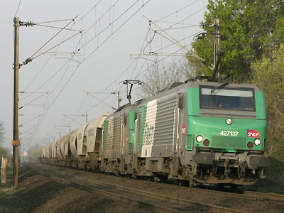
Les BB 27137 et 27097 en UM (13/04/2007)
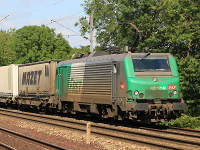
La BB 27121 M (pour panto modifié Midi) aux Noues (30/07/2011)
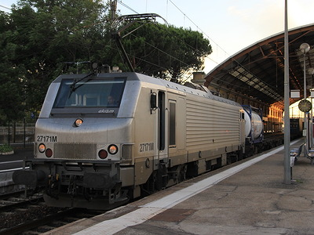
La BB 27171 M Akiem en gare d'Avignon refoule une rame
de combiné (23/06/2015)
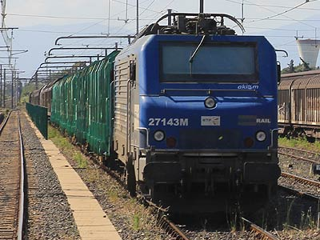
La BB 27143 M louée par Akiem à Régiorail. Rivesaltes (23/05/2015)
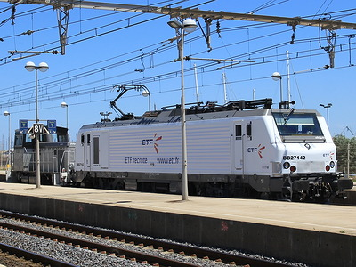
La BB 27142 louée par Akiem à ETF (Sète, 23/06/2015)